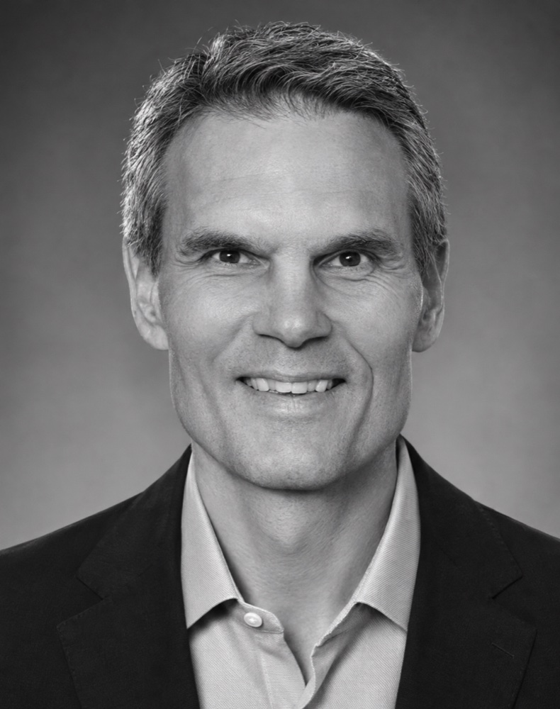

About Mine Intelligence Labs
A laboratory for the next generation of engineering intelligence.
Mine Intelligence Labs is developing and applying new methods in artificial intelligence, machine learning, computation, and reasoning algorithms to solve complex minerals processing and refining problems.

From the Founder
I have spent the last three decades working in mining, minerals processing and refining, at companies including BHP and Albemarle. I managed operations and large projects and built many teams. Yet the part I liked most never changed: working with people to solve the hardest problems, especially deep technical ones.
What frustrated me was how long it took. Capable engineers spent most of their time keeping mines and plants running, with too little time left to investigate difficult technical problems. On projects, we had more design options than we could test, and slow design iteration meant many optimization opportunities were left unexplored. Meanwhile, analytical methods and optimization algorithms continued to improve, but we rarely had the capacity to take full advantage of them.
I founded Mine Intelligence Labs to break this constraint. We are conducting research to build a verifiable, general-purpose AI process engineer: a system that works as an expert team member to investigate and solve problems at operating plants, or to design and optimize new ones. Advances in AI, machine learning, and computational methods have brought this ambition within reach for the first time.
It will be hard. We intend to deliver useful capabilities along the way, but the complete system will take many years to develop. That is part of what makes the challenge so compelling: in my experience, it is the most difficult problems that are truly worth solving.
Jac FouireFounder, Mine Intelligence Labs
Our mission
Expand what engineering teams can accomplish.
We work at the intersection of mining, minerals processing, engineering, decision science, machine learning, causal reasoning, practical process modeling, and AI.
Our goal is to develop a verifiable general-purpose AI process engineer. It is not AI for its own sake, but the application of the latest research to solve persistent, high-value engineering problems.
Collaborate with us
Help shape the future of minerals processing intelligence.
We welcome conversations with mining and processing organizations, engineers, researchers, and technology partners interested in complex operational investigations.
Contact us at contact@mineintelligencelabs.com.